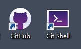

说明
本教程仅针对githubwindows客户端通过Bash命令行上传文件。
事前工作
1、网页端新建仓库(repository)点击查看怎么新建仓库。这里，我将新仓库命名为"test"。
2、安装github客户端点击进入github客户端下载页面。安装好客户端之后，我们应该有如下图两个应用：前一个是图形化界面应用,后一个是命令行。本教程就是专门针对后一个命令行中Bash命令上传。
3、建议将文件夹选项中的"显示隐藏文件"打开。点击查看怎么显示隐藏文件
4、建议设置一个专用的文件夹,专门存放需上传到github上的文件。这里，我用的是 D:\我的文档\GitHub 。可以将命令行的起始位置设置为该文件夹。设置步骤为: 右键桌面上的Git Shell图标 >> 属性 >> 选择"快捷方式"选项卡 >> 修改起始位置并确认。
5、命令行有4种脚本语言cmdGit BashPowerShellCustom本教程介绍的是Git Bash，因此需要将命令行语言修改为Git Bash方法步骤是: 打开github图形界面 >> 点击右上角的齿轮(设置) >> 选择option.. >> 修改默认Default Shell为Git Bash并确认。
Git Bash上传
将你想要上传的文件装在一个文件夹中，整体复制到 之前设置的 专用文件夹 D:\我的文档\GitHub 下，打开git命令行，依次输入如下共6行命令：
-
用于更改当前目录 D:\我的文档\GitHub >> D:\我的文档\GitHub\你的文件夹
-
仓库的初始化,会自动在你的文件夹下新建一个.git隐藏文件夹
-
将该目录下所有文件添加到缓存，注意：最后面的点不能省略,那个点表示(当前目录下)所有文件
-
$ git commit -m "随便写点什么（最好是有意义的备注）"
将缓存添加到本地仓库
-
$ git remote add 你自己随便取什么代号 git@github.com:你的github用户名/github线上仓库的名字.git
相当于给远程(线上)仓库取个简称，方便以后使用
-
将本地仓库推送到远程(线上)仓库